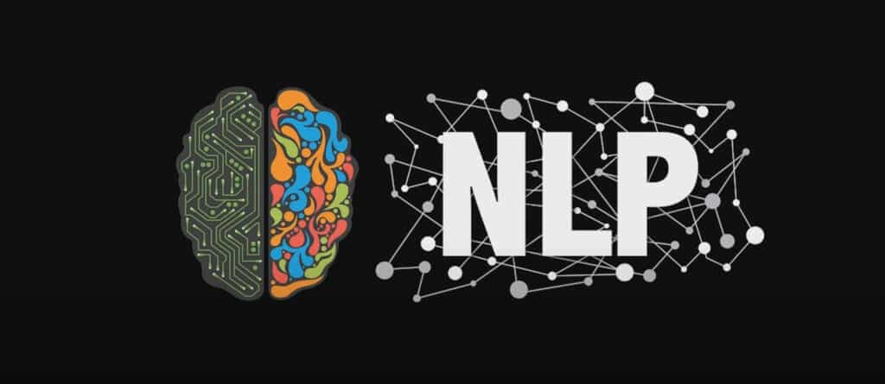

Introducción a la PNL
Procesamiento del Lenguaje Natural (Natural Language Processing, NLP)es un campo interdisciplinario de la informática, la inteligencia artificial y la lingüística, dedicado a permitir que las computadoras comprendan, procesen y generen el lenguaje natural humano.
Objetivos principales:
- Comprender: permitir que las computadoras comprendan el significado del lenguaje humano
- Procesar: analizar, transformar y operar sobre textos y voz
- Generar: permitir que las computadoras produzcan lenguaje humano natural y fluido

Características del lenguaje natural
El lenguaje humano posee las siguientes características únicas, que hacen de la PNL un campo extremadamente desafiante:
1. Ambigüedad (Ambiguity)
- Ambigüedad léxica: una palabra tiene múltiples significados
- Ejemplo: "bank" puede referirse a una institución financiera o a la orilla de un río
- Ambigüedad sintáctica: la estructura gramatical de una oración puede tener múltiples interpretaciones
- Ejemplo: "Vi a la persona que llevaba el telescopio" (¿la persona lleva el telescopio, o yo veo a la persona a través del telescopio?)
- Ambigüedad semántica: el significado general de la oración no es claro
- Ejemplo: "Compraron manzanas" (¿la fruta o los productos de Apple?)
2. Dependencia del contexto (Context Dependency)
- La misma palabra u oración tiene diferentes significados en distintos contextos
- Ejemplo: "cool" en "Esta idea es muy cool" significa genial, mientras que "Hoy hace cool" significa fresco
3. Innovación y cambio constante
- El lenguaje evoluciona continuamente, surgen nuevas palabras y nuevas formas de expresión sin cesar
- La rápida difusión de jerga de internet y expresiones populares
- Ejemplo: desde "给力" (genial) hasta "yyds" (永远的神, el dios eterno)
4. Contexto cultural y social
- El lenguaje conlleva un profundo significado cultural
- El mismo idioma tiene diferencias dialectales en diferentes regiones
- Ejemplo: el "¿Ya comiste?" en chino no solo es una pregunta, sino también una forma de saludo
5. No estandarización
- Expresiones coloquiales, abreviaturas y errores ortográficos
- Gramática no normativa y oraciones incompletas
- Ejemplo: expresiones informales en Weibo y registros de chat
Tareas principales de la PNL
1. Tareas básicas
- Segmentación (Tokenization): dividir el texto en unidades significativas
- Etiquetado de categorías gramaticales (POS Tagging): identificar la categoría gramatical de cada palabra
- Análisis sintáctico (Parsing): analizar la estructura gramatical de las oraciones
- Reconocimiento de entidades nombradas (NER): identificar nombres de personas, lugares, organizaciones, etc.
2. Tareas de comprensión
- Etiquetado de roles semánticos: identificar las relaciones semánticas dentro de las oraciones
- Resolución de correferencia: determinar las diferentes expresiones que se refieren a la misma entidad en un texto
- Extracción de relaciones: identificar relaciones semánticas entre entidades
- Extracción de eventos: extraer información de eventos del texto
3. Tareas de aplicación
- Clasificación de texto: clasificar el texto en categorías predefinidas
- Análisis de sentimientos: determinar la orientación emocional del texto
- Traducción automática: traducir de un idioma a otro
- Resumen de texto: generar un resumen conciso del texto
- Sistemas de pregunta-respuesta: recuperar o generar respuestas basadas en preguntas

Historia del desarrollo de la PNL
Primera etapa: era de los métodos basados en reglas (1950s-1980s)
Características:
- Basada en reglas gramaticales y bases de conocimiento creadas manualmente
- Los métodos de sistemas expertos eran dominantes
- Capacidad de procesamiento limitada, pero con buen rendimiento en dominios específicos
Trabajos representativos:
- 1950- Se propone el Test de Turing, sentando las bases para la evaluación de la inteligencia de las máquinas
- 1954- Experimento Georgetown-IBM, primer intento de traducción automática
- 1960s- Chatbot ELIZA, que utiliza técnicas de coincidencia de patrones
- 1970s- Desarrollo de analizadores sintácticos, como ATN (Augmented Transition Network, red de transición aumentada)
Sistemas típicos:
- SHRDLU（1970）: comprender y ejecutar instrucciones en lenguaje natural en el mundo de bloques
- LUNAR（1972）: responder preguntas sobre rocas lunares
Limitaciones:
- La cobertura de reglas es limitada, difícil de manejar la complejidad del lenguaje
- Alto costo de mantenimiento y mala escalabilidad
- No puede manejar bien la ambigüedad y los casos anómalos
Segunda etapa: era de los métodos estadísticos (1980s-2010s)
Características:
- Métodos de aprendizaje estadístico basados en corpus a gran escala
- Amplia aplicación de algoritmos de aprendizaje automático
- Metodología impulsada por datos
Desarrollos técnicos clave:
1980s-1990s: auge de los métodos estadísticos
- Modelos ocultos de Márkov (HMM): utilizados para el etiquetado de categorías gramaticales y el reconocimiento de voz
- Gramáticas probabilísticas libres de contexto (PCFG): utilizadas para el análisis sintáctico
- Traducción automática estadística: basada en la alineación de frases y oraciones
2000s: madurez de los métodos de aprendizaje automático
- Máquinas de vectores de soporte (SVM): excelente rendimiento en clasificación de texto
- Campos aleatorios condicionales (CRF): utilizados para tareas de etiquetado de secuencias
- Naive Bayes: método de clasificación simple y eficaz
- Modelos de máxima entropía: manejo de problemas con múltiples características
Hitos importantes:
- 1988- Publicación del corpus Brown, que impulsa el desarrollo de la PNL estadística
- 1993- Publicación de Penn Treebank, que proporciona datos estándar para el análisis sintáctico
- 2000- Publicación de WordNet, que proporciona una red semántica léxica a gran escala
- 2005- Google publica su sistema de traducción automática estadística
Ventajas:
- Capacidad para procesar textos reales a gran escala
- Cierta capacidad de generalización
- Puede aprender patrones automáticamente a partir de los datos
Limitaciones:
- Requiere grandes cantidades de datos anotados
- Gran carga de trabajo en la ingeniería de características
- Difícil capturar información semántica profunda
Tercera etapa: era del aprendizaje profundo (2010s-2020s)
Características:
- Renacimiento y desarrollo de los modelos de redes neuronales
- Métodos de aprendizaje de extremo a extremo
- Avances en el aprendizaje de representaciones
Desarrollos técnicos clave:
Principios de la década de 2010: renacimiento de las redes neuronales
- 2010- Aplicación de las redes neuronales recurrentes (RNN) en el modelado del lenguaje
- 2013- Publicación de Word2Vec, un avance en la representación de vectores de palabras
- 2014- Modelo Sequence-to-Sequence, la revolución de la traducción automática
Mediados de la década de 2010: mecanismo de atención
- 2015- Propuesta y aplicación del mecanismo de atención
- 2016- La traducción automática neuronal alcanza un nivel práctico
- 2017- Publicación de la arquitectura Transformer, "Attention is All You Need"
Finales de la década de 2010: modelos preentrenados
- 2018- Publicación de BERT, un avance en el preentrenamiento bidireccional
- 2019- Publicación de GPT-2, modelo generativo a gran escala
- 2020- Publicación de GPT-3, que muestra una capacidad lingüística asombrosa
Avances importantes:
- Tecnología de word embeddings (vectores de palabras)：Word2Vec, GloVe, FastText
- Modelos secuenciales: LSTM, GRU, RNN bidireccional
- Mecanismo de atención: resuelve el problema de dependencias de secuencias largas
- Arquitectura Transformer: entrenamiento paralelo, mejora significativa de los resultados
- Modelos preentrenados: BERT, serie GPT, comprensión del lenguaje general
Cuarta etapa: era de los grandes modelos de lenguaje (2020s-presente)
Características:
- Crecimiento drástico del tamaño de los modelos
- El amanecer de la inteligencia artificial general
- Capacidad de aprendizaje con pocos ejemplos (few-shot) y sin ejemplos (zero-shot)
Desarrollos clave:
- 2020- GPT-3 (175 mil millones de parámetros) demuestra una poderosa capacidad de aprendizaje few-shot
- 2021- PaLM (540 mil millones de parámetros) alcanza nuevas cotas en múltiples tareas
- 2022- Publicación de ChatGPT, que desencadena un auge en las aplicaciones de IA
- 2023- Publicación de GPT-4, mejora significativa en capacidades multimodales
- 2024 hasta la actualidad- Surgimiento de competidores como Claude, Gemini, etc.
Características técnicas:
- Efecto de escala: el número de parámetros del modelo crece de cientos de millones a billones
- Capacidades emergentes: el modelo muestra habilidades inesperadas al alcanzar cierto tamaño
- Fusión multimodal: procesamiento unificado de texto, imágenes y audio
- Seguimiento de instrucciones: mejora de la controlabilidad del modelo mediante fine-tuning con instrucciones
Principales áreas de aplicación de la PNL

Traducción automática (Machine Translation)
Trayectoria de desarrollo:
- Traducción automática estadística (SMT): basada en alineación de frases y modelos estadísticos
- Traducción automática neuronal (NMT): método de redes neuronales de extremo a extremo
- Traducción con grandes modelos: capacidad de traducción demostrada por grandes modelos como GPT-3/4
Desafíos técnicos:
- Diferencias entre pares de idiomas
- Comprensión y mantenimiento del contexto
- Traducción de terminología de dominios especializados
- Estilo lingüístico y adaptación cultural
Ejemplos de aplicación:
- Google Translate, Baidu Translate
- Traducción de voz en tiempo real
- Servicios de traducción de documentos
- Recuperación de información multilingüe
Motores de búsqueda y recuperación de información
Tecnologías principales:
- Comprensión de consultas: entender la intención de búsqueda del usuario
- Clasificación de documentos: ordenar los resultados de búsqueda según relevancia
- Coincidencia semántica: cálculo de similitud semántica más allá de palabras clave
- Recomendación personalizada: basada en el historial y las preferencias del usuario
Evolución tecnológica:
- De la coincidencia por palabras clave a la comprensión semántica
- De la clasificación estática a la personalización dinámica
- De la búsqueda de texto a la búsqueda multimodal
Sistemas representativos:
- El algoritmo RankBrain de Google Search
- La aplicación de ERNIE de Baidu en la búsqueda
- La búsqueda conversacional de Bing Chat
Atención al cliente inteligente y sistemas de diálogo
Tipos de sistemas:
- Orientados a tareas: realizar tareas específicas (reservas, consultas, etc.)
- De charla informal (chit-chat): mantener conversaciones en dominio abierto
- Híbridos: combinan finalización de tareas y charla informal
Tecnologías clave:
- Reconocimiento de intenciones: comprender la intención real del usuario
- Relleno de ranuras (slot filling): extraer información clave relacionada con la tarea
- Gestión del diálogo: controlar el flujo y el estado de la conversación
- Generación de respuestas: generar respuestas naturales y relevantes
Escenarios de aplicación:
- Atención al cliente inteligente en banca y comercio electrónico
- Altavoces inteligentes (Alexa, Siri)
- Chatbots
- Asistentes virtuales
Análisis de texto y análisis de sentimientos
Tareas de análisis de texto:
- Clasificación de temas: clasificar documentos en categorías temáticas
- Extracción de palabras clave: identificar las palabras centrales de un documento
- Agrupamiento de textos (clustering): agrupar documentos similares
- Análisis de tendencias: analizar los cambios temporales del contenido del texto
Niveles de análisis de sentimientos:
- A nivel de documento: sentimiento general de todo el documento
- A nivel de oración: la polaridad de sentimiento de cada oración
- A nivel de aspecto: sentimiento dirigido a aspectos específicos
- De grano fino: intensidad y complejidad del sentimiento
Aplicaciones comerciales:
- Monitoreo de redes sociales
- Análisis de reseñas de productos
- Gestión de la reputación de marca
- Indicadores de sentimiento para el mercado de valores
Extracción de información
Tareas de extracción:
- Reconocimiento de entidades nombradas: nombres de personas, lugares, organizaciones, etc.
- Extracción de relaciones: relaciones semánticas entre entidades
- Extracción de eventos: participantes, tiempo, lugar del evento, etc.
- Extracción de atributos: características y propiedades de las entidades
Métodos técnicos:
- Coincidencia de patrones basada en reglas
- Métodos de aprendizaje supervisado
- Supervisión remota y supervisión débil
- Ajuste fino de modelos preentrenados
Valor de aplicación:
- Construcción de grafos de conocimiento
- Sistemas de preguntas y respuestas inteligentes
- Monitoreo de eventos noticiosos
- Análisis de riesgos financieros
Resumen automático
Tipos de resúmenes:
- Resumen extractivo: seleccionar oraciones importantes del texto original
- Resumen generativo (abstractivo): generar nuevo texto de carácter sintetizador
- Resumen híbrido: combinar métodos extractivos y generativos
Desafíos técnicos:
- Identificación de información importante
- Coherencia y legibilidad del resumen
- Consistencia en resúmenes de múltiples documentos
- Control de la longitud del resumen
Escenarios de aplicación:
- Resúmenes de noticias
- Resúmenes de artículos académicos
- Resúmenes de documentos legales
- Generación de actas de reuniones
Principales desafíos de la PNL
Ambigüedad del lenguaje
Ambigüedad léxica (Lexical Ambiguity)
- Polisemia (una palabra con múltiples significados)：
- "打": golpear, comprar, encender, etc.
- de acuerdo / banco / caminar, etc.
- Homófonos：
- En chino: el uso de "的、地、得"
- En inglés: "there, their, they're"
Ambigüedad sintáctica (Syntactic Ambiguity)
- Relación de modificación poco clara：
- "美丽的花儿的香味" (¿es la flor hermosa o el aroma es hermoso?)
- Diversidad en el análisis estructural：
- Vi a la niña que llevaba un paraguas.
Ambigüedad semántica (Semantic Ambiguity)
- Referencia indefinida：
- "Li Ming le dijo a Zhang Hua que él es muy inteligente" (¿Quién es inteligente?)
- Ambigüedad de alcance：
- A todos los estudiantes no les gusta este maestro
Métodos de solución:
- Uso de información contextual
- Juicio probabilístico de los modelos de lenguaje
- Asistencia de bases de conocimiento
- Aprendizaje multitarea
Comprensión del contexto
Contexto local
- Dependencias semánticas dentro de la oración
- Comprensión de frases y cláusulas
- Relaciones semánticas entre palabras
Contexto global
- Coherencia semántica a nivel de párrafo y documento
- Continuidad del tema
- Dependencias semánticas de largo alcance
Contexto de diálogo
- Información histórica en conversaciones de múltiples turnos
- Inferencia de información implícita
- Evolución de la intención en el diálogo
Desafíos técnicos:
- Dependencia de largo alcance: Las RNN tradicionales tienen dificultades para procesar secuencias largas
- Coherencia semántica: Mantener la consistencia lógica del texto generado
- Razonamiento de sentido común: Requiere una gran cantidad de conocimiento previo
Soluciones:
- Mecanismos de atención y Transformer
- Modelos de lenguaje preentrenados
- Modelos aumentados con conocimiento
- Fusión de información multimodal
Diferencias culturales y lingüísticas
Desafíos translingüísticos
- Diferencias genealógicas de las lenguas：
- Familia sino-tibetana vs. familia indoeuropea
- Morfología flexiva rica vs. importancia del orden de las palabras
- Diferencias en los sistemas de escritura：
- Tamaños diferentes de los conjuntos de caracteres
- Métodos diferentes de segmentación de palabras
Contexto cultural
- Modismos y refranes：
- pintar patas a una serpiente
- Expresiones específicas de cada cultura：
- El concepto de "rostro" (面子, mianzi) en chino
- El sistema de honoríficos del japonés
Factores sociolingüísticos
- Diferencias dialectales：
- Mandarín vs. dialectos regionales
- Inglés estándar vs. inglés dialectal
- Variación de registro：
- Registro formal vs. informal
- Lengua oral vs. lengua escrita
Estrategias de solución:
- Modelos preentrenados multilingües
- Aprendizaje por transferencia entre lenguas
- Adaptación cultural
- Recopilación de datos localizados
Problema de escasez de datos
Idiomas de bajos recursos
- En el mundo hay más de 7000 idiomas, pero solo unos pocos cuentan con recursos digitales abundantes
- Preservación e investigación de idiomas en peligro de extinción
- Dialectos e idiomas de minorías étnicas
Ámbitos especializados
- Terminología en ámbitos especializados como medicina y derecho
- Formas de expresión específicas de cada sector
- Dificultad para obtener datos anotados
Ámbitos emergentes
- Nuevos vocablos generados por las nuevas tecnologías
- Nuevas expresiones en las redes sociales
- Nuevas formas de comunicación intercultural
Evolución temporal
- Cambios históricos de los idiomas
- Aparición rápida de nuevos vocablos
- Cambios semánticos graduales
Soluciones:
- Aprendizaje por transferencia: Transferencia de idiomas con muchos recursos a idiomas con pocos recursos
- Aumento de datos: Ampliar los datos de entrenamiento mediante diversas técnicas
- Aprendizaje con pocas muestras (few-shot): Adaptación rápida con pocas muestras
- Aprendizaje no supervisado y autosupervisado: Reducir la dependencia de los datos anotados
- Anotación mediante crowdsourcing: Recopilar datos aprovechando la inteligencia colectiva
- Datos sintéticos: Generar datos de entrenamiento mediante reglas o modelos
Complejidad computacional
Desafíos del tamaño de los modelos
- Crecimiento explosivo del número de parámetros (GPT-3: 175 mil millones de parámetros)
- Aumento drástico de los costos de entrenamiento
- Latencia de inferencia y consumo de recursos
Requisitos de tiempo real
- Respuesta en milisegundos de los motores de búsqueda
- Interacción en tiempo real de los sistemas de diálogo
- Limitaciones de recursos de los dispositivos móviles
Problemas de escalabilidad
- Gestión de solicitudes masivas de usuarios
- Procesamiento unificado multilingüe y multitarea
- Demandas computacionales de los servicios personalizados
Dificultades de evaluación y cuantificación
Problemas de subjetividad
- Juicio subjetivo de la calidad del texto
- Diferencias culturales en la calidad de la traducción
- Criterios de evaluación de la escritura creativa
Limitaciones de las métricas de evaluación
- Imperfección de métricas como BLEU y ROUGE
- Diferencias entre evaluación automática y evaluación humana
- Complejidad de la evaluación multidimensional
Conjuntos de datos de referencia (benchmarks)
- Problemas de representatividad de los conjuntos de datos
- Brecha entre las tareas de evaluación y las aplicaciones reales
- Vigencia y actualización de los conjuntos de datos
Resumen y perspectivas
El procesamiento del lenguaje natural, como rama central de la inteligencia artificial, ha recorrido un camino de desarrollo que va del enfoque basado en reglas al enfoque basado en datos, y luego al liderado por los grandes modelos. Cada etapa tiene sus propias características técnicas y contribuciones históricas.
Estado actual:
- Los grandes modelos de lenguaje demuestran una capacidad impresionante de comprensión y generación del lenguaje
- La fusión multimodal se ha convertido en una nueva dirección de desarrollo
- Los ámbitos de aplicación se expanden continuamente y el valor comercial es cada vez más evidente
Tendencias futuras:
- Inteligencia artificial general: Desarrollo hacia sistemas de IA más generales e inteligentes
- Fusión multimodal: Integración integral de texto, visión y audio
- Servicios personalizados: Comprensión y generación de lenguaje personalizadas y más precisas
- Explicabilidad: Aumentar la transparencia del proceso de decisión de los modelos
- Optimización de la eficiencia: Reducir el costo computacional manteniendo el rendimiento
- Ética y seguridad: Garantizar que los sistemas de IA sean justos, seguros y controlables
Consejos de aprendizaje:
Para los estudiantes de NLP, se recomienda:
- Base sólida: Comprender a fondo los fundamentos de la lingüística y las ciencias de la computación
- Orientación a la práctica: Profundizar la comprensión mediante la práctica en proyectos
- Seguimiento de la vanguardia: Prestar atención a los últimos avances tecnológicos y dinámicas de investigación
- Pensamiento interdisciplinario: Integrar conocimientos de múltiples disciplinas como la lingüística, la psicología y la sociología
- Capacidades de ingeniería: Desarrollar la capacidad de transformar los resultados de investigación en aplicaciones reales
El futuro del procesamiento del lenguaje natural está lleno de oportunidades y desafíos. Con el continuo avance de la tecnología, tenemos razones para creer que la capacidad de las máquinas para comprender y generar el lenguaje humano seguirá mejorando, aportando más conveniencia y valor a la sociedad humana.
Otras extensiones